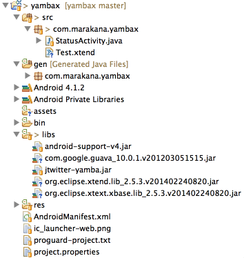

Install latest XTend IDE + Android SDK
Download latest Android SDK Bundle:
Download full eclipse with xtend from here:
Using the xtend version of eclipse, install the android SDK into it using this update site:
Create a standard Android Application called 'yambax', with the following characteristics:


Make sure you can launch this application in the emulator

res/values/strings.xml
<?xml version="1.0" encoding="utf-8"?>
<resources>
<string name="app_name">Yamba X</string>
<string name="titleYamba">Yamba</string>
<string name="titleStatus">Status Update</string>
<string name="hintText">Please enter your 140-character status</string>
<string name="buttonUpdate">Update</string>
</resources>
res/layout/activity_status.xml
<LinearLayout xmlns:android="http://schemas.android.com/apk/res/android"
android:orientation="vertical" android:layout_width="fill_parent"
android:layout_height="fill_parent">
<!-- Title TextView-->
<TextView android:layout_width="fill_parent"
android:layout_height="wrap_content" android:gravity="center"
android:textSize="30sp"
android:layout_margin="10dp" android:text="@string/titleStatus"/>
<!-- Status EditText -->
<EditText android:layout_width="fill_parent"
android:layout_height="0dp" android:layout_weight="1"
android:hint="@string/hintText" android:id="@+id/editText"
android:gravity="top|center_horizontal"></EditText>
<!-- Update Button -->
<Button android:layout_width="fill_parent"
android:layout_height="wrap_content" android:text="@string/buttonUpdate"
android:textSize="20sp" android:id="@+id/buttonUpdate"></Button>
</LinearLayout>
Copy :
to ./lib of your android project.
StatusActivity:
package com.marakana.yambax;
import winterwell.jtwitter.Twitter;
import android.app.Activity;
import android.os.Bundle;
import android.util.Log;
import android.view.View;
import android.view.View.OnClickListener;
import android.widget.Button;
import android.widget.EditText;
public class StatusActivity extends Activity implements OnClickListener
{
private static final String TAG = "StatusActivity";
EditText editText;
Button updateButton;
Twitter twitter;
@Override
public void onCreate(Bundle savedInstanceState)
{
super.onCreate(savedInstanceState);
setContentView(R.layout.activity_status);
// Find views
editText = (EditText) findViewById(R.id.editText);
updateButton = (Button) findViewById(R.id.buttonUpdate);
updateButton.setOnClickListener(this);
twitter = new Twitter("student", "password");
twitter.setAPIRootUrl("http://yamba.marakana.com/api");
}
public void onClick(View v)
{
twitter.setStatus(editText.getText().toString());
Log.d(TAG, "onClicked");
}
}
Launch and you should see:
Broadband direct sales
01 7015609
Reference number
1409840
Xtext Nature
Add xtext nature to the project by selecting Project Properties->Configure->Add Xtext Nature
Then in settings:

To prime the project with the correct libraries, create a new XTend class call "Test" in the com.marakana.yambax package:
package com.marakana.yambax
class Test {
}
This will have an error on the package declaration. Select the error and it will promptw with "Add Xtext Lbraries to the project". Select this, and the libraries will be added. Your project will look like this:
Look carefully at the three jar files addeed under 'Xtend'. You will need to locate these files using explorer/finder, and copy them to the lib folder of your project.
Delete the "Xtext Library" artifact from the project by selecting the Xtend and remove from build path
The project should resemble the following:

Finally, delete the current classes in com.marakana.com and replace them with the followng:
StatusActivity.xtend
package com.marakana.yambax
import android.app.Activity
import android.os.Bundle
import android.widget.EditText
import android.widget.Button
import android.view.View.OnClickListener
import android.view.View
import winterwell.jtwitter.Twitter
import android.util.Log
import android.os.StrictMode
class StatusActivity extends Activity implements OnClickListener
{
val TAG = "StatusActivity"
var EditText editText
var Button updateButton
var twitter = new Twitter("student", "password")
override onCreate(Bundle savedInstanceState)
{
super.onCreate(savedInstanceState)
setContentView(R.layout.activity_status)
val policy = new StrictMode.ThreadPolicy.Builder().permitAll().build();
StrictMode.setThreadPolicy(policy);
editText = findViewById(R.id.editText) as EditText
updateButton = findViewById(R.id.buttonUpdate) as Button
updateButton.setOnClickListener(this)
twitter.setAPIRootUrl("http://yamba.marakana.com/api")
}
override onClick(View arg0)
{
twitter.setStatus(editText.getText.toString)
Log.d(TAG, "onClicked")
}
}
Make sure the application has Internet Permissions:
AndridManifest.xml
<uses-permission android:name="android.permission.INTERNET" />
You should be able to launch this application on the emulator, enter some text and press 'Update'. Expect to see your text on this site:
Async Task
Create a new package com.marakana.utils containing an xtend class to encapsulate the twitter API:
TwitterAPI.xtend
package com.marakana.utils
import winterwell.jtwitter.Twitter
class TwitterAPI
{
var Twitter twitter
new ()
{
this.twitter = new Twitter("student", "password")
twitter.setAPIRootUrl("http://yamba.marakana.com/api")
}
def String updateStatus (String status)
{
val result = twitter.updateStatus(status)
result.text
}
}
Introduce an AsyncTask com.marakana.utils to use this API:
TwitterPoster.xtend
package com.marakana.yambax
import android.os.AsyncTask
import android.util.Log
import winterwell.jtwitter.TwitterException
import android.widget.Toast
import android.app.Activity
import com.marakana.utils.TwitterAPI
class TwitterPoster extends AsyncTask<String, Integer, String>
{
var TwitterAPI twitter
var Activity activity
new(TwitterAPI twitter, Activity activity)
{
this.twitter = twitter
this.activity = activity
}
override doInBackground(String... it)
{
try
{
var status = twitter.updateStatus(get(0))
status
}
catch (TwitterException e)
{
Log.e("YAMBA", e.toString());
"Failed to post";
}
}
override onPostExecute(String result)
{
Toast.makeText(activity, result, Toast.LENGTH_LONG).show();
}
}
Now we can reimplement StatusUpdate activity, using a Lambda to handle the button event:
package com.marakana.yambax
import android.app.Activity
import android.os.Bundle
import android.widget.EditText
import android.widget.Button
import android.util.Log
import com.marakana.utils.TwitterAPI
class StatusActivity extends Activity
{
val twitter = new TwitterAPI
override onCreate(Bundle savedInstanceState)
{
super.onCreate(savedInstanceState)
setContentView(R.layout.activity_status)
val editText = findViewById(R.id.editText) as EditText
val updateButton = findViewById(R.id.buttonUpdate) as Button
updateButton.setOnClickListener = [
val twitterPoster = new TwitterPoster(twitter, this)
twitterPoster.execute(editText.getText().toString())
Log.d("YAMBA", "onClicked")
]
}
}
Notice we no longer need to disable strict mode, as we are not posting from a background task.
Verify this works as expected, and that the status appears on:
A toast message should also appear if the update was successful
Preferences
Inroduce the following new strings into res/values/strings.xml:
<string name="titlePrefs">Preferences</string>
<string name="titleUsername">Username</string>
<string name="titlePassword">Password</string>
<string name="titleApiRoot">API Root</string>
<string name="summaryUsername">Please enter your username</string>
<string name="summaryPassword">Please enter your password</string>
<string name="summaryApiRoot">URL of Root API for your service</string>
This will allow us to define a res/menus/menu.xml resource:
<?xml version="1.0" encoding="utf-8"?>
<menu xmlns:android="http://schemas.android.com/apk/res/android" >
<item android:id="@+id/itemPrefs" android:title="@string/titlePrefs"
android:icon="@android:drawable/ic_menu_preferences"></item>
</menu>
Now we can create the PreferencesActivity itself. Introduce a new folder in res called xml, and create this file in there:
prefs.xml
<?xml version="1.0" encoding="utf-8"?>
<PreferenceScreen xmlns:android="http://schemas.android.com/apk/res/android" >
<EditTextPreference android:title="@string/titleUsername"
android:summary="@string/summaryUsername" android:key="username"></EditTextPreference>
<EditTextPreference android:title="@string/titlePassword"
android:password="true" android:summary="@string/summaryPassword"
android:key="password"></EditTextPreference>
<EditTextPreference android:title="@string/titleApiRoot"
android:summary="@string/summaryApiRoot" android:key="apiRoot"></EditTextPreference>
</PreferenceScreen>
Create a new PrefsActivity activity class:
PrefsActivity.xtend:
package com.marakana.yambax
import android.os.Bundle
import android.preference.PreferenceActivity;
class PrefsActivity extends PreferenceActivity
{
override onCreate(Bundle savedInstanceState)
{
super.onCreate(savedInstanceState);
addPreferencesFromResource(R.xml.prefs);
}
}
We can display this is StatusUdate:
override onCreateOptionsMenu(Menu menu)
{
getMenuInflater.inflate(R.menu.menu, menu)
true
}
override onOptionsItemSelected(MenuItem item)
{
startActivity(new Intent(this, typeof(PrefsActivity)))
true
}
Finally, make sure the activity is referenced in the manifest:
<activity android:name=".PrefsActivity" android:label="@string/titlePrefs" />
When the menu is selected, we should see something like this:

Lambdas
Define a new TwitterAPI, which allows account details to be changed:
TwitterAPI.xtend
package com.marakana.utils
import winterwell.jtwitter.Twitter
import android.content.SharedPreferences
class TwitterAPI
{
var Twitter twitter
new (String username, String password, String root)
{
this.twitter = new Twitter(username, password)
twitter.setAPIRootUrl(root)
}
def changeAccount(SharedPreferences prefs)
{
val username = prefs.getString("username", "student")
val password = prefs.getString("password", "password")
val root = prefs.getString("apiRoot", "http://yamba.marakana.com/api")
this.twitter = new Twitter(username, password)
twitter.setAPIRootUrl(root)
}
def String updateStatus (String status)
{
val result = twitter.updateStatus(status)
result.text
}
}
This is a revised version of StatusUpdate to use preferences and this new api:
StatusUpdate.xtend
package com.marakana.yambax
import android.app.Activity
import android.os.Bundle
import android.widget.EditText
import android.widget.Button
import com.marakana.utils.TwitterAPI
import android.view.Menu
import android.view.MenuItem
import android.content.Intent
import android.view.View.OnClickListener
import android.content.SharedPreferences.OnSharedPreferenceChangeListener
import android.content.SharedPreferences
import android.preference.PreferenceManager
class StatusActivity extends Activity
{
var EditText editText
var Button updateButton
var TwitterAPI twitter
var update = [ new TwitterPoster(twitter, this).execute(editText.getText.toString) ] as OnClickListener
var prefsChanged = [ SharedPreferences prefs, String s |
twitter.changeAccount(prefs) ] as OnSharedPreferenceChangeListener
override onCreate(Bundle savedInstanceState)
{
super.onCreate(savedInstanceState)
setContentView(R.layout.activity_status)
twitter = new TwitterAPI("student", "password", "http://yamba.marakana.com/api")
editText = findViewById(R.id.editText) as EditText
updateButton = findViewById(R.id.buttonUpdate) as Button
updateButton.setOnClickListener = update
PreferenceManager.getDefaultSharedPreferences(this).registerOnSharedPreferenceChangeListener = prefsChanged
}
override onCreateOptionsMenu(Menu menu)
{
getMenuInflater.inflate(R.menu.menu, menu)
true
}
override onOptionsItemSelected(MenuItem item)
{
startActivity(new Intent(this, typeof(PrefsActivity)))
true
}
}
Notice how the update is now a lambda, declared as part of the class definition.
Run the application now. You should be able to tweet as before, but now also be able to use a different account. These accounts can be created on :
Application Objects
Introduce a new Application class, which will manage the preferences settings:
package com.marakana.yambax
import com.marakana.utils.TwitterAPI
import android.content.SharedPreferences
import android.content.SharedPreferences.OnSharedPreferenceChangeListener
import android.app.Application
import android.preference.PreferenceManager
class YambaApplication extends Application
{
@Property TwitterAPI twitter
var prefsChanged = [ SharedPreferences prefs, String s|
twitter.changeAccount(prefs) ] as OnSharedPreferenceChangeListener
override onCreate()
{
super.onCreate
twitter = new TwitterAPI("student", "password", "http://yamba.marakana.com/api")
PreferenceManager.getDefaultSharedPreferences(this).registerOnSharedPreferenceChangeListener = prefsChanged
}
override onTerminate()
{
super.onTerminate
}
}
In this version, we can rework to TwitterPoster to use the TwitterAPI in the ApplicationObject:
package com.marakana.yambax
import android.os.AsyncTask
import android.util.Log
import winterwell.jtwitter.TwitterException
import android.widget.Toast
import android.app.Activity
import com.marakana.utils.TwitterAPI
class TwitterPoster extends AsyncTask<String, Integer, String>
{
val TwitterAPI twitter
val Activity activity
new(Activity activity)
{
var app = activity.getApplication() as YambaApplication
this.twitter = app.twitter
this.activity = activity
}
override doInBackground(String... it)
{
try
{
var status = twitter.updateStatus(get(0))
status
}
catch (TwitterException e)
{
Log.e("YAMBA", e.toString());
"Failed to post";
}
}
override onPostExecute(String result)
{
Toast.makeText(activity, result, Toast.LENGTH_LONG).show();
}
}
We can now simplify the StatusUpdate class:
package com.marakana.yambax
import android.app.Activity
import android.os.Bundle
import android.widget.EditText
import android.widget.Button
import android.view.Menu
import android.view.MenuItem
import android.content.Intent
import android.view.View.OnClickListener
class StatusActivity extends Activity
{
var EditText editText
var Button updateButton
var update = [ new TwitterPoster(this).execute(editText.getText.toString) ] as OnClickListener
override onCreate(Bundle savedInstanceState)
{
super.onCreate(savedInstanceState)
setContentView(R.layout.activity_status)
editText = findViewById(R.id.editText) as EditText
updateButton = findViewById(R.id.buttonUpdate) as Button
updateButton.setOnClickListener = update
}
override onCreateOptionsMenu(Menu menu)
{
getMenuInflater.inflate(R.menu.menu, menu)
true
}
override onOptionsItemSelected(MenuItem item)
{
startActivity(new Intent(this, typeof(PrefsActivity)))
true
}
}
We define the ApplicationObject in the manifest:
<application
android:allowBackup="true"
android:icon="@drawable/ic_launcher"
android:label="@string/app_name"
android:theme="@style/AppTheme"
android:name="com.marakana.yambax.YambaApplication">
Run the application now and it should work as before.